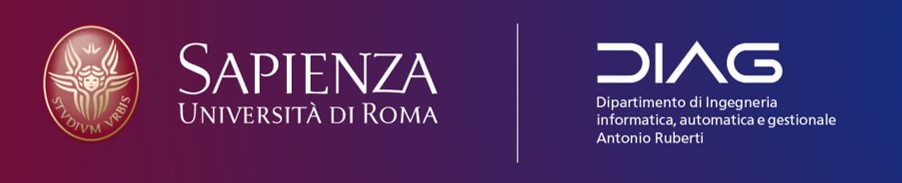

ABOUT ME

I worked in the past as a trainee Data engineer and Analyst and I have collaborated through
scholarships and research contracts with the Sapienza University of Rome.
I work in ETL, Data Analysis, Text Mining, Data visualization and infographics, etc... I don't think
there's a simple position for the jobs I've done...let's just say I do a little bit of everything in
the data environment.
Thanks to my studies, I have the possibility to analyze and understand the results having two
visions: economical and technical. Since I was a child I've been interested in computer science,
music and sport.
I am currently a Phd student in Management and Industrial engineering at Sapienza University of Rome.
PORTFOLIO
In this section there are some of the public projects I have worked on (or am working on).
MIUR Data Analysis
This project allows to visualize the results of clustering analysis of data related to Italian
universities (Open Data MIUR). In particular, data are analyzed through the use of the following
algorithms:
The results of these analyses are fully explorable through interactive graphs. At the end of the
analysis is reported in detail the trend of academic staff divided by gender in Italian universities in
the field of Industrial and Information Engineering.
Scientific Articles
Daraio, C., Iazzolino, G., Laise, D., Coniglio, I.M. and Di Leo, S. (2021), "Meta-choices in ranking
knowledge-based organizations", Management Decision, Vol. ahead-of-print No. ahead-of-print.
DOI link
Technical Report
Daraio C., Di Leo S., Scannapieco M.(2021) - Accounting for Quality in Data Integration Systems: A
Completeness-Aware Integration Approach. Tr N.03
Link
Conference papers
IFKAD Conference 2021, Daraio C., Iazzolino G., Laise D., Coniglio I.M., Di Leo S. (2020),
Mapping Intellectual Capital and Performance of Knowledge Organizations: An Enriched Systematic Review,
IFKAD-International Forum on Knowledge Asset Dynamics 2021
IFKAD Conference 2020, Daraio C., Iazzolino G., Laise D., Coniglio I.M., Di Leo S. (2020), Meta-choices
in Ranking knowledge-based organizations, IFKAD-International Forum on Knowledge Asset Dynamics2020/p>
RESUME
Education
Phd in industrial and management engineering
2020 - present
Sapienza University of Rome, Rome, Italy
PhD in progress, development of a research project concerning the impact of regulation on firms'
efficiency in three contexts:
- Regulated Market
- Quasi Market
- Ex-regulated Market (Markets under deregulation)
Master of Management engineering
2017 - 2019
Sapienza University of Rome, Rome, Italy
Master's Degree in Management Engineering followin various courses in the Data Analysis and Simulation
field. Thesis entitled: "Non-parametric efficiency analysis (DEA) of Italian gas and electricity sales
companies"
Bachelor of Computer engineering
2014 - 2017
Roma Tre University, Rome, Italy
Bachelor's Degree in Computer Science Engineering (DM 270), Computer Science Curriculum with Thesis
entitled: "an interactive support system for the organization of graduation sessions"
Professional Experience
Junior Research Fellow
Dec 2020 - Present
Sapienza University of Rome, Rome, Italy
- Strategic analysis of the retail market in the Italian energy and Natural Gas sectors.
Junior Research Fellow (scholarship)
Apr 2020 - Nov 2020
Sapienza University of Rome, Rome, Italy
- Research scholarship for data management analysis and performance measurement of reasearch
infrastructures within the RISIS2 research project (H2020).
- ETL and Budget Analysis from 2016 to 2018 of Italian public universities.
- Congruence analysis of international and national databases of Italian public universities(ETER DB).
- The results of this Analysis led to the preparation of a laboratory session for the RISIS winter
school organized by the Sapienza University of Rome and to the preparation of a seminar on
"Introduction to Data Integration and Data Sources of Italian Universities".
Data Analyst and C# Dev
Sep 2019 - Mar 2020
REV Gestione Crediti Spa (sole shareholder Bank of Italy), Rome, Italy
- Extra-curricular internship at REV gestione crediti S.P.A .(sole shareholder Bank of Italy) in the
ICT and Portfolio Analysis division.
- Creation of store procedures in SQL server
- ETL activities (using SQL and .NET)
- Creation tools for the internal company information system
- Development of tools for the internal company information system
- Development of various data extraction tools from pdf files (.net framework using itextsharp API)
- Data stream load, analysis and reporting (Power BI).
SKILLS
The following are some of my Skills. Surely the Soft Skill more important not reported regards to the
flexibility to operate with different technologies and great ability of technological adaptation.
Image and Video Editing 80%
Data Visualization and infographics 80%